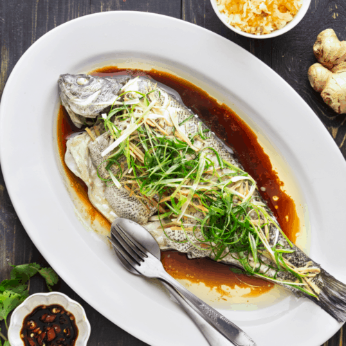

Steamed Fish

Description
A traditional Cantonese steamed fish recipe.
You will commonly see this dish during luxurious banquets as well as casual family dinners. Follow this simple recipe and enjoy it at home!
Ingredients
- 1 fresh fish
- Green onions (about 2 stalks)
- Ginger (about a thumb)
- Cilantro (to taste)
- 1 Thai red chili (optional)
- 1/3 cup light soy sauce
- 1 tablespoon dark soy sauce
- 1.5 tablespoon sugar
- 1 tablespoon oil (avocado oil recommended)
- 1/2 cup water
Steps
- Make a few cuts on each side of the fish, about 1-2cm deep and place onto a steaming dish.
- Steam the fish in a wok or whatever steamer you have for about 12 to 15 minutes, depending on size of fish.
- Slice the green onions and ginger into fine strips.
- Cut the chili into small slices.
- Lightly chop the cilantro.
- Put the herbs and aromatics aside for now.
- In a small bowl, combine water, sugar and soy sauces.
- Heat the oil in a pan over medium-high heat. When the oil is hot, add ginger, green onion and chili and cook for about 10-15 seconds.
- Add the soy sauce mixture and the cilantro. Heat for about 30 seconds.
- Once the fish is finished cooking, remove from heat, drain any excess liquid and pour the sauce over the fish.
- Enjoy!